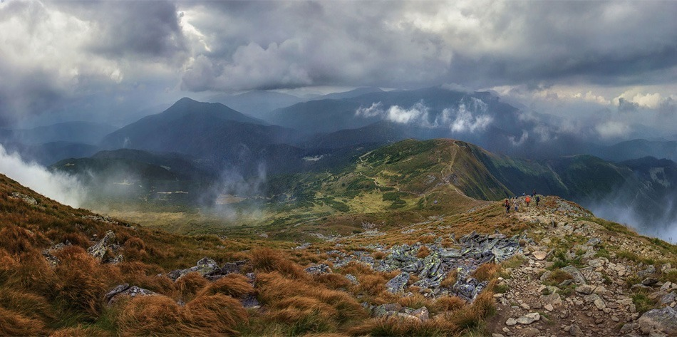
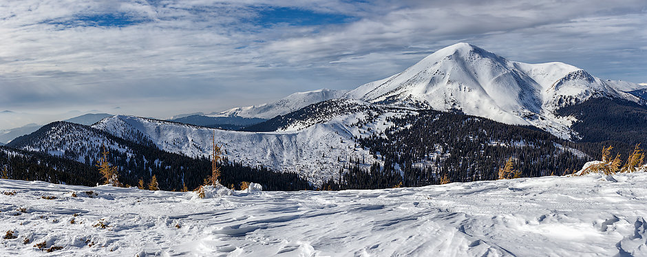
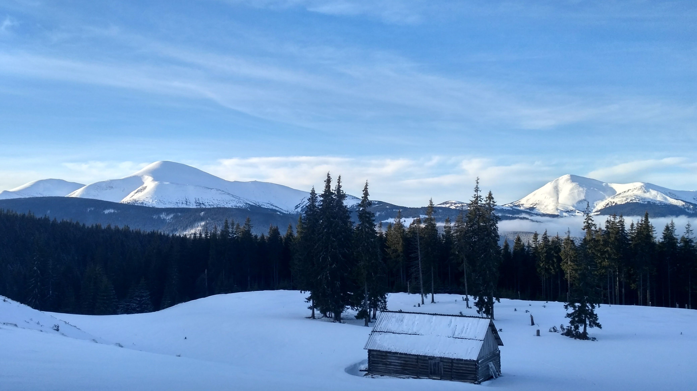

Маршрути на Петрос
Популярний маршрут - одне / дводенне сходження на Петрос з Лазещини з фінішем в Квасах. А ще можна зважитися йти хребтової стежкою від Говерли, якщо ви впевнені в собі і силах своїх попутників. На Петросі не буває штовханини з туристів і зівак, як на Говерлі, не дивлячись на те, що вершини знаходяться в безпосередній близькості один від одного. Тому, хто бажає усамітнення на карпатських маршрутах - вам на Петрос.
Панорама Петроса
З нього відкриваються захоплюючі дух картини Карпат: хребти Чорногори, Свидовець, Мармаросів, а для повноти враження, польські Татри і території румунських Карпат (але тільки за умови ясної погоди). Мандрівникові на замітку: Петрос - приваблива вершина для тих, кому хочеться зрозуміти справжню різницю між Прикарпаттям та Закарпаттям. Як тільки опиняєшся за перевалом, зміни помітні одразу ж: в закарпатському лісі ростуть переважно листяні дерева, навесні схили покриваються смарагдом зелені, а восени - визнав скаргу увядающих листя. З вершини видно все як на долоні: приємний оксамит модрин з боку Квасов і строгі соснові схили стежкою на Лазещину. Краса, куди не глянь!
Як дістатися до Петроса
До Петроса можна підійти з Лазещини або Квасов. Перший варіант - оптимальний: в будь-якому випадку вам доведеться довго йти вгору по горі, поки не вийдете до підніжжя, далі - трохи більше 2 км крутого підйому до вершини. Спуск схожий на підйом - після стрімкої дороги вниз буде полога стежка. В Кваси і Лазещину регулярно ходять маршрутні автобуси і поїзди.
